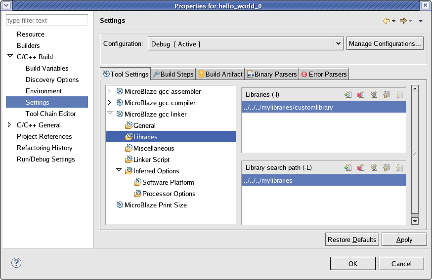

SDK application projects
You can add libraries and library paths for Managed Make projects. If you have a custom library to link against, you should specify the library path and the library name to the linker.
To set properties for your project:


Working with software projects
Copyright © 1995-2012 Xilinx, Inc. All rights reserved.